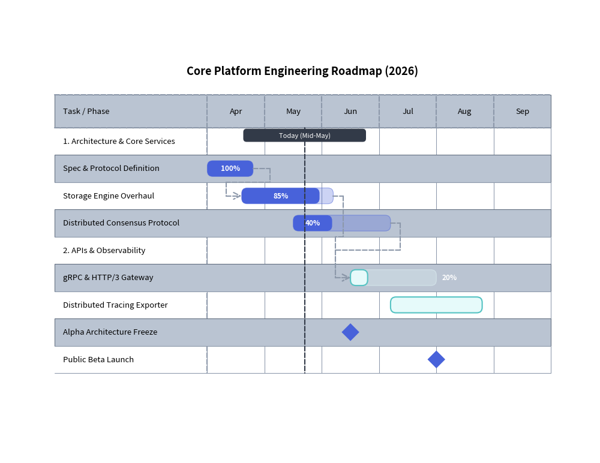
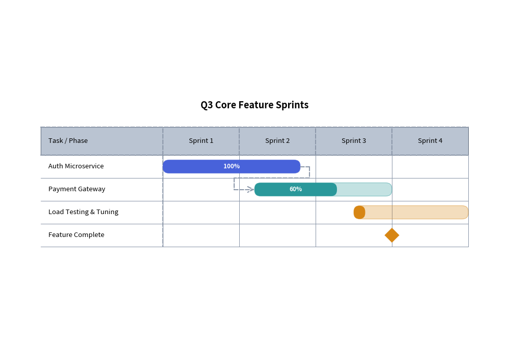

GanttChart: Project Roadmaps, Milestones & Dependencies
GanttChart provides declarative, vector-grade project roadmaps, sprint schedules, and milestone timelines. Drawing inspiration from sequence diagrams, timeline intervals are structured horizontally along the X-axis while task rows, section divider banners, and milestones stack sequentially downwards.
1. Overview & Structural Hierarchy
Task / Milestone Sprint 1 Sprint 2 Sprint 3 Sprint 4
┌──────────────────────┬──────────────┬──────────────┬──────────────┬──────────────┐
│ ▼ Core Engine │ │ │ │ │
│ Database Migration │ [██████████] │ │ │ │
│ API Gateway V2 │ └──────┼───────────►[████████] │ │
│ ◆ Beta Code Freeze │ │ │ ◆ │ │
└──────────────────────┴──────────────┴──────────────┴──────────────┴──────────────┘
│
Today's Marker
- Section Dividers (
add_section): Categorize tasks into functional domains (e.g. "Core Engine", "Observability"). - Task Bars (
add_task): Represent working durations with optional percentage completion progress bars (progress=0.85). - Milestones (
add_milestone): Diamond marker indicators representing key delivery dates or code freezes. - Vertical Time Markers (
add_marker): Full-height vertical indicators highlighting the current date or sprint boundaries. - Dependency Connectors (
add_dependency): Orthogonal routing arrows linking prerequisite tasks to downstream deliverables.
2. Constructor & Configuration
from drawlib.charts.gantt import GanttChart
from drawlib.styles import Styles
chart = GanttChart(
columns=["Apr", "May", "Jun", "Jul", "Aug", "Sep"],
axis_line_style=Styles.MutedDashed,
axis_text_style=Styles.Black.patch(text_size=9.5),
grid_style=Styles.MutedLight,
header_style=Styles.MutedLight,
zebra_style=Styles.MutedLight,
progress_text_style=Styles.WhiteBold.patch(text_size=8.5),
width=95.0, # Total chart bounding width
label_width=28.0, # Width reserved for task label column
header_height=6.0, # Height of the top timeline header band
row_height=5.0, # Height allocated per task/milestone row
title="Engineering Roadmap (2026)",
title_style=Styles.BlackBold.patch(text_size=13.0),
bar_radius=1.0, # Rounded corners for task duration bars
)
3. Engineering Release Roadmap with Dependencies
The following complete example demonstrates sections, tasks with progress indicators, milestones, dependency arrows, and a "Today" marker:

4. Time Coordinate Indexing
In GanttChart, time coordinates can be passed as:
- Column Name String: Matches the exact string in
columns(e.g.,start="Apr"aligns with the beginning of the "Apr" column). - Floating-point Offset:
0.0represents the left edge of the first column,1.0is the start of the second column,1.5is halfway through the second column, etc.
5. Agile Sprint Schedule with Status Theming
Tasks can also accept explicit styles to designate project phases, teams, or status:
